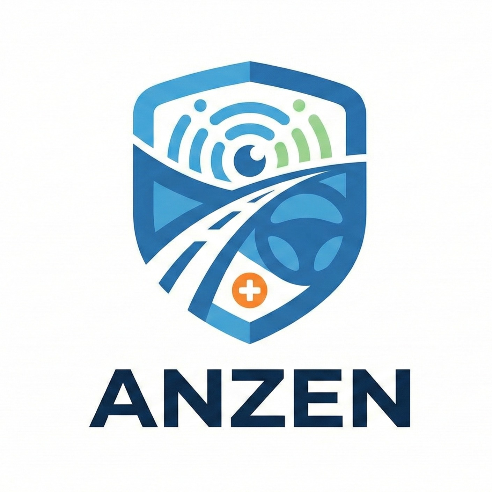

System Design
System Architecture
An overview of how ANZEN's four AI modules integrate through a unified edge computing platform to deliver real-time road safety.


A unified AI-powered vehicle safety platform combining real-time hazard detection, accident response, blind spot monitoring, predictive driver behavior analysis — and community-validated hazard mapping — built for Sri Lankan roads.
Conventional road safety systems are reactive, fragmented, and burdensome. Drivers in Sri Lanka face compounding risks — unmapped hazards, delayed emergency data, and limited situational awareness — with no prevention window.
A multi-modal Edge-AI ecosystem built on a Raspberry Pi 4 unit, fusing cameras, radar, and accelerometers to shift from reactive monitoring to proactive risk prediction — four systems running concurrently.
A single integrated system addressing the critical gaps in current road safety solutions in Sri Lanka and beyond.
Automatic detection of potholes, construction zones, and traffic police. YOLOv8 Nano on Raspberry Pi with GPS logging and cloud sync.
Detects crashes, classifies severity (Low/Medium/High), and counts passengers. MPU6050 + YOLOv5 + Random Forest for emergency response.
Integrates blind spot radar detection, traffic sign recognition, and speed-adaptive alerts. RCWL-0516 radar + YOLOv8 + OBD-II speed gating.
Forecasts driver emotional state changes (Stress, Fatigue, Aggression) 30-60 seconds in advance. MobileNetV3 + BiLSTM with attention.
An overview of how ANZEN's four AI modules integrate through a unified edge computing platform to deliver real-time road safety.
ANZEN integrates four complementary AI systems into a single vehicle-mounted edge computing platform. Rather than relying on manual reporting or reactive detection, ANZEN operates continuously to detect hazards, assess accidents, predict risks, and forecast driver behavior—all in real-time.
Automatically identifies road hazards without driver input
Updates shared hazard maps with geofenced validation
Real-time processing on Raspberry Pi (no cloud latency)
Forecasts accidents 30-60 seconds before they happen
The Problem: Road accidents cause 1.35M deaths globally per year. Sri Lanka records over 2,500 fatal accidents annually. Current systems (Waze, Google Maps) require manual reporting, which is dangerous while driving.
Tools like Waze and Google Maps rely on voluntary manual submissions—dangerous while driving. Prior research focused on static defects (potholes) but neglected temporary hazards like construction zones and mobile police checkpoints.
Lack of a unified, automatically operating system that combines detection, community validation, and lifecycle management (expiry logic) for transient hazards.
Current solutions like OnStar provide location but lack severity information or passenger counts. Previous hybrid systems often excluded occupancy awareness.
No existing comprehensive alert system provides fusion of crash intensity (G-force) and real-time passenger counts for emergency responders.
Most ITS address only discrete tasks (e.g., signs OR blind spots). Many solutions fail to account for live vehicle speed when issuing alerts, leading to false alarms and driver distraction.
Lack of an integrated platform that combines geo-fenced bend warnings, radar-based blind spot monitoring, and speed-adaptive traffic sign alerts.
Existing systems are reactive, detecting fatigue or stress only after manifestation. Single-modality approaches struggle with accuracy and environmental noise.
Absence of temporal multimodal predictive modeling with sufficient forecast horizons (30-60 seconds) to allow meaningful proactive intervention.
Literature review completed, 4 research areas defined, requirements analysis finalized.
Hazard detection and accident detection modules implemented with initial testing.
Hardware integration plan, software architecture designed, Raspberry Pi cluster configured.
Multi-modal safety system and driver behavior prediction modules in development. Integration testing ongoing.
Full system integration, real-world field testing in Sri Lanka, performance evaluation.
Comprehensive final report, documentation, presentations, and knowledge transfer.
All project documents are hosted on Google Drive. Click any card to open directly.
Technical Assessment Framework evaluation document
DownloadFormal project authorization, scope, and stakeholder overview
DownloadInitial project proposal with objectives and scope definition
DownloadProject milestone and deliverable completion checklist
DownloadComprehensive literature review and referenced academic works
DownloadComprehensive project conclusion and recommendations
DownloadAll presentation slides are hosted on Google Drive. Click to view directly.
Have questions about ANZEN or interested in collaboration? Contact us and we'll get back to you as soon as possible.
Information Technology
Sri Lanka Institute of Technology
+94 11 2123456 (Main Line)
+94 71 2345678 (Mobile)
Colombo, Sri Lanka